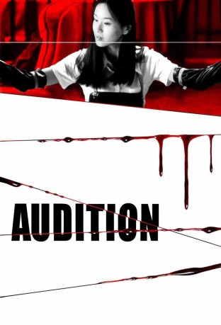

#3845 Audition
 
 IMDB-Wertung: 7.2 / 10
IMDB-Wertung: 7.2 / 10  Metascore: 0
Metascore: 0 
Aoyama, ein reicher Geschäftsmann, sucht eine neue Freundin. Unter dem Vorwand, ein Casting zu veranstalten, lockt sein Freund, ein Fernsehproduzent, allerlei attraktive Kandidatinnen an, darunter die schöne Asami, die Aoyama wie die perfekte Verkörperung seiner Vorstellungen erscheint. Schon bald aber muß er erkennen, daß er sich mit der Beziehung zu der jungen Frau etwas zugemutet hat, was ihm über den Kopf wächst...
Jahr: 1999
Dauer: 115 Minuten
FSK: 18
Land: Japan Studio: Rapid Eye MoviesTonspuren:
Untertitel: Deutsch,
Auflösung: 720p (1280x720) Größe: 4474 MB
Genre: Horror, Drama, Mystery
Regisseur: Takashi Miike
Drehbuch: Philip Gelatt
Soundtrack:
Darsteller:
 Ryo Ishibashi als Shigeharu Aoyama
Ryo Ishibashi als Shigeharu Aoyama- Eihi Shiina als Asami Yamazaki
 Jun Kunimura als Yasuhisa Yoshikawa
Jun Kunimura als Yasuhisa Yoshikawa- Miyuki Matsuda als Ryoko Aoyama
- Tetsu Sawaki als Shigehiko Aoyama
 Renji Ishibashi als Old man in wheelchair
Renji Ishibashi als Old man in wheelchair Toshie Negishi als Rie
Toshie Negishi als Rie- Ren Ôsugi als Shimada
- Shigeru Saiki als Toastmaster
- Ken Mitsuishi als Director
- Yuriko Hiro'oka als Michiyo Yanagida
 Fumiyo Kohinata als TV station presenter
Fumiyo Kohinata als TV station presenter- Misato Nakamura als Misuzu Takagi
- Yuuto Arima als Shigehiko as a child
- Ayaka Izumi als Asami as a child
- Nattsu Tanabashi als Hotel front desk
- Kimiko Tachibana als FM announcer
- Tatsuo Endô als Doctor
- Koshio Jindôji als Nurse
 Kanji Tsuda als Bartender
Kanji Tsuda als Bartender- Party als Gangster
- Saori Tachibana als
- Yayoi ��tsu als
Datei: X:\FSK18-Eastern\Audition (1999, FSK18, 1280x720).mkv seit 20.06.2016
Festplatte: FSK18
 Es gibt insgesamt 102 Filme in der Gruppe 'FSK18-Eastern'
Es gibt insgesamt 102 Filme in der Gruppe 'FSK18-Eastern'